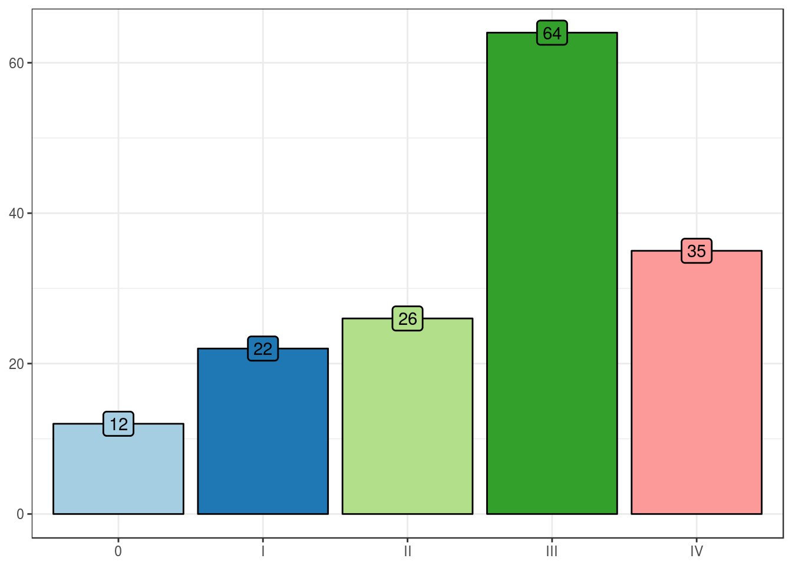
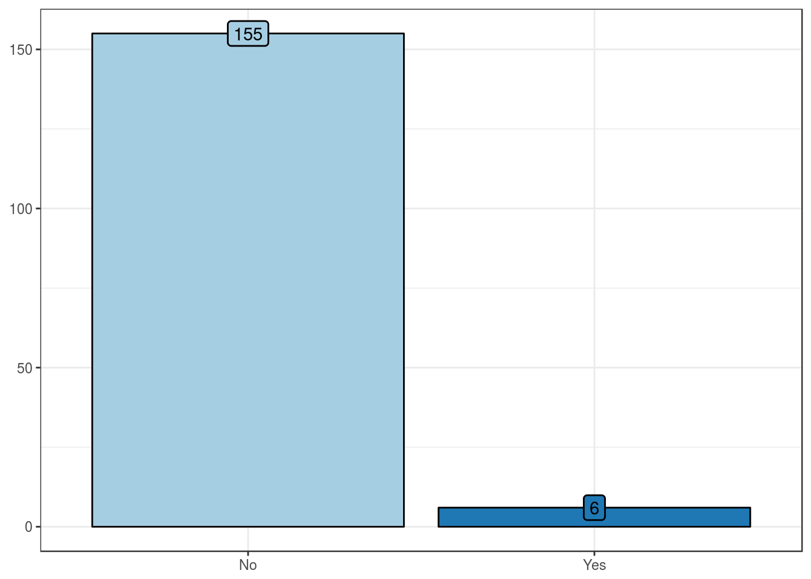

In this section, we describe the clinical, preoperative, pathologic, treatment, and outcome features of the patients’ cohort. Features were described using measures of central tendency and dispersion, histograms, density plots, and barplots. The dataset was composed of 172 patients.
Clinical features
Age, in years
Summary table
| Mean |
64.7 |
| Standard deviation |
10.9 |
| Median |
67 |
| Interquartile range |
15.2 |
| Mininum |
34 |
| Maximum |
89 |
Sex
Summary table
| Female |
29 (17) |
| Male |
143 (83) |
Race
Summary table
| Caucasian |
154 (90) |
| African-American |
11 (6) |
| Asian |
7 (4) |
History of prostate cancer
Summary table
| No |
26 (33) |
| Yes |
53 (67) |
Preoperative features
Preoperative procedure
Summary table
| Biopsy |
102 (62) |
| TURBT |
63 (38) |
Preoperative carcinoma in situ
Summary table
| No |
73 (44) |
| Yes |
92 (56) |
Preoperative cT
Summary table
| cTa/Tis |
17 (10) |
| cT1 |
44 (27) |
| cT2 |
81 (50) |
| cT3 |
19 (12) |
| cT4 |
2 (1) |
Preoperative stage
Summary table
| 0 |
12 (8) |
| I |
22 (14) |
| II |
26 (16) |
| III |
64 (40) |
| IV |
35 (22) |

Pathologic features
pT
Summary table
| pTa/pTis |
18 (11) |
| pT1 |
23 (14) |
| pT2 |
33 (20) |
| pT3 |
71 (42) |
| pT4 |
24 (14) |
Pathologic stage
Summary table
| 0 |
18 (10) |
| I |
23 (13) |
| II |
30 (17) |
| III |
47 (27) |
| IV |
54 (31) |
Histologic grade
Summary table
| Low-grade |
1 (0.6) |
| High-grade |
170 (99.4) |
Presence of carcinoma in situ
Summary table
| No |
65 (38) |
| Yes |
107 (62) |

Presence of lymphovascular invasion
Summary table
| No lymphovascular invasion |
120 (70) |
| Lymphovascular invasion |
51 (30) |

Treatment features
Preoperative radiotherapy
Summary table
| No |
155 (96) |
| Yes |
6 (4) |

Preoperative chemotherapy
Summary table
| No |
150 (93) |
| Yes |
11 (7) |
Intravesical chemotherapy
Summary table
| No |
100 (62) |
| Yes |
61 (38) |
Type of intravesical chemotherapy
Summary table
| BCG |
58 (95) |
| BCG + mitomycin C |
1 (2) |
| Mitomycin C |
2 (3) |
Postoperative radiotherapy
Summary table
| No |
151 (94) |
| Yes |
10 (6) |
Postoperative chemotherapy
Summary table
| No |
107 (66) |
| Yes |
54 (34) |
Type of postoperative chemotherapy
Summary table
| Adjuvant chemotherapy |
44 (90) |
| Salvage chemotherapy |
5 (10) |
Outcome features
Follow-up, in months
Summary table
| Mean |
48.9 |
| Standard deviation |
46.4 |
| Median |
32.5 |
| Interquartile range |
63 |
| Mininum |
0 |
| Maximum |
213 |

Tumor progression
Summary table
| No tumor progression |
69 (49) |
| Tumor progression |
71 (51) |
Early complications
Summary table
| No early complications |
10 (12) |
| Early complications |
76 (88) |
Late complications
Summary table
| No late complications |
12 (14) |
| Late complications |
71 (86) |
Overall mortality
Summary table
| ANOD + AWD |
62 (36) |
| DOC + DOD |
110 (64) |